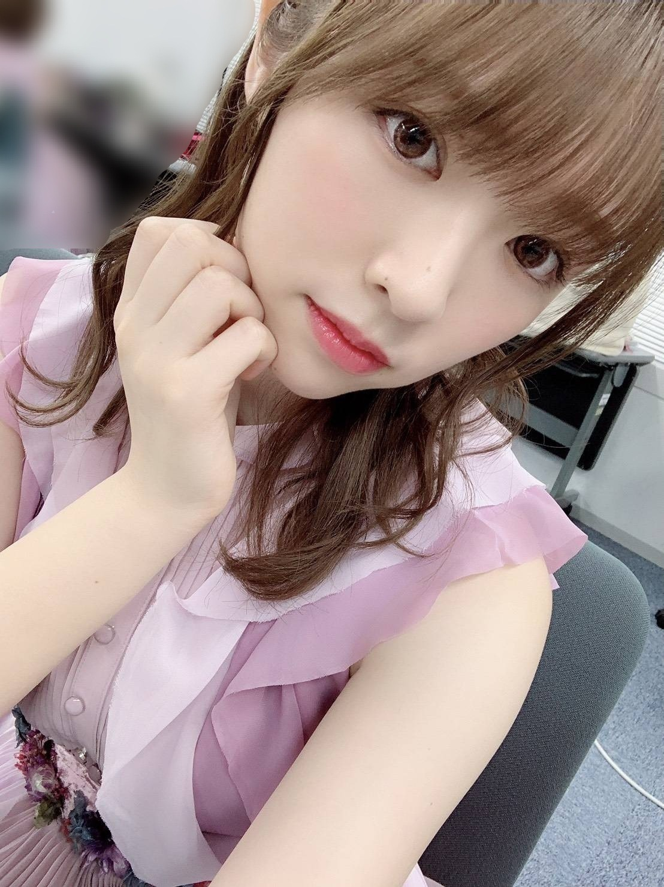

2019/0628Fri紫林檎
テレ東音楽祭、ありがとうございました！
ご視聴頂いた皆様、乃木坂ちゃんは見れましたか？
トークにも参加させていただき
初の体験だったので凄く緊張したと共に、
物凄く嬉しかったです。

この衣装のベルトにドライフラワーが
装飾されていまして、
花好きの私にとっては物凄くお気に入りの衣装です！
踊ってるのが何よりの発散だし
楽しくて本当に幸せな時間、、
見てくださった皆様、ありがとうございました！
OVERTURE、発売中です！

私のやりたい事を存分に叶えて下さいました、、
世界観バッチしでございます
撮影も凄い楽しかった！

好きな事のページでは大好きな小説、
ジャイアンツ、匂いフェチの3つについて
存分に語らせて頂きました。
好きな事を誰かに話すってこんなに清々しいのね、
とそのインタビュー時初めて思いました。
インタビューではなんと、、
Seishiroさんにお話をお伺いする事が
現実となりました。
私の事について沢山お話してくれていて
見て凄く感動しました。
メンバー全体の事、ダンスの事、
Seishiroさん自身の事、沢山詰まってる
インタビューになっております！
是非、見て下さると嬉しいです。
みり愛
2019/06/28 20:30


コメント(344)
かわいいし！！
ぜったいみる！！！
毎日大変そうだけどなんだか嬉しいよ！！！
頑張ってね\( 'ω' )/
雑誌とかでみり愛見れる機会増えて嬉しいよ〜
ついに夏が来ましたがお体に気をつけて(^・-・^)
overture買ったよ！あの雰囲気大好きやからめちゃくちゃ興奮した！！みり愛の違う一面も見れたし大満足！
30日握手会行くけまた感想言うね！
テレ東音楽祭見ました！！
歌披露だけでなく、トークしてるところも映っててとても幸せでしたー！
CM前やCM後もたくさん映っていてとても嬉しかったですー！
今週末の握手会めちゃくちゃ楽しみです！
ぺいです
テレ東音楽祭、、、宮城はテレビ東京が映らないから見れなかったよ、、、、
でも選抜としていろいろメディアの露出も増えているようで嬉しいです
overtureの写真は別人みたいだね、、、
2枚目の写真の雰囲気、特に好きかも
またブログ更新まってるよ
ぺい
もんちゃんです！
テレ東音楽祭お疲れ様〜
30日ビックサイトでの握手会楽しみにしてる！
またね〜！
今日も一日お疲れ様！！
テレ東見たよ！！もうね！みりあのアップが最高だった！可愛かったよ！Singoutもかっこよかった！ Overtureみるね！！しっかり
今部活と勉強で握手とか行けないけど、いくから！！絶対。だから待っといてね！覚えてて約束ね！
明日もみりあにとって良い一日でありますように...。
すぐ見つけれたよ！
30の個握も行く楽しみやんな〜
野球の話も出来ればなーと思っております！
頑張ってくださいね！
名古屋会えるの楽しみ！
雑誌見たよー！
いつもとは違う雰囲気のメイクでまた違った一面が見れたね。
雑誌の一部で幼少期の写真があったけどやっぱり可愛かったよ！
ジメジメした気候に負けず頑張ろー！
明後日握手会行くよ！久々の握手会！めちゃめちゃ楽しみ❤︎❤︎❤︎
ばりょーです
Overture見させて頂きました。
とても内容が濃くみり愛ちゃんの所だけで1時間ぐらい読むのに時間がかかりました
ありがとうございます
音楽祭見たよ
みり愛ちゃんのダンスに釘付けでした
アナウンサーの抜けに写ってるの可愛かったよ
overture読んだよ
みり愛ちゃんの事今まで以上に知れたいい記事でした
明後日の握手会券はあるんだけど行けるか微妙になっちゃった
行けたらよろしくお願いします
overtureもテレ東音楽祭も、特に歌番組でみり愛が見られるのは嬉しい限り〜
10代最後にいろいろやりたいことできてるのかな？
またいろんなとこでみり愛が見られるの楽しみだ〜
まずは全ツスタートの名古屋楽しんでね！！！
テレ東音楽祭見ました〜
ひな壇に座ってるのめずらしくて超テンションあがりました。
可愛かったです。
もちろんパフォーマンスもすばらしくみり愛ちゃんすげーってなってました。
OVERTUREも読みました〜。
内容濃くて読み応えありました。
ダンスへの熱い思い伝わってきました。
がんばってね！
名古屋全ツ2日とも参戦します。
楽しみだぁぁぁぁ！！！
れお
テレ東音楽祭めっちゃいい位置に座ってたなぁ
めっちゃ長く映ってた
全球団に好きな選手いるけどタイガース贔屓やからライバルやな
小説がジャイアンツのせいで小林に見えた笑
テレ東音楽祭みたよ！やっぱり、みり愛は踊ってる時が1番生き生きしてるね！
あと、司会の後ろに座ってたからみり愛がたくさん映っててたくさん見れたから幸せだった！
OVERTUREまだ買ってないから買うね！
来週から全国ツアーが始まるけど体調に気をつけて頑張ってね！！
テレ東が見れない地域なので、音楽祭は見れませんでしたが、ひな壇に笑顔で座ってる姿を友人に送ってもらい、それを見た時とても嬉しかったです。
overtureも読みました。ジャイアンツファンということは置いといて、好きなことを前に出す、ということはとても大切なことだと思うので続けていって欲しいです。ジャイアンツファンということは置いといて…。
来週からいよいよツアーですね。リハも佳境に入ってると思います。体調を崩したり、怪我だけには気をつけてくださいね、
福岡でパフォーマンスを見れる事を楽しみにしています。
いつも前に進む勇気をありがとうございます。
テレ東音楽祭見たよ〜！
雛壇、2列目に座ってて嬉しかった（ ; ; ）！
衣装めっちゃかわいいよね！ベルト、花柄なんだ〜って思ってたけどまさかドライフラワーだったとは( ;o; )更に可愛いが増した！
んーーやっぱりOvertureは可愛い。！
誌面でも見ました
こういう、普通のファッション誌ではなかなかない個性的なお洋服、とっても好きだしみり愛ちゃんにバッチリ似合うし、本当に最高最強の組み合わせだーーー（ ; ; ）
たくさんの活躍、本当に嬉しいし私の生きる源になっています。
今日もありがとう、お疲れ様！
めっちゃかわいい
好きー♡♡
みり愛ちんブログ更新ありがとう！！！
テレ東音楽祭観たよ！座ってる位置的にすごい映ったね！良かったテレビでみり愛ちんみれるのほんと嬉しい
ダンスも毎度のことながら素晴らしかったですほんと、綺麗
Overture買わなくては！プリン会集合してるしね！買うしかない！笑
明後日握手会で久々に会えるのすごい嬉しいめっちゃ楽しみどす。！
りか
テレ東音楽祭良かったよ！国分さん映った瞬間上にみり愛ちゃんおるもん！めちゃめちゃいい位置にいたねーwCM前？明け？のカメラ寄ってくとこもよかった！singout！、シンクロニシティ、ジコチューも良かったです！
Overture…まだ買えてないです(泣)明日明後日で本屋さん行こうと思います！楽しみです！みり愛の世界観…好きです。
いい位置に座ってたね！
本番もよかった！
芯のあるダンスが伝わってきたよ
OVERTUREは感激した。
こんなに1人のメンバーを特集してくれるなんて。。。
ありがたいね。。。
Seishiroさんがちゃんとみり愛のことを見てくれてるのが嬉しい！
テレ東音楽祭観ましたよー。
めっちゃ良き位置に陣取ってましたねw
司会の間からニコニコしてたみり愛ちゃんがひょっこり♪
ほーいヽ( ・∀・)ﾉoverture見まーす♪
テレ東音楽祭おつかれさま、
最近忙しくてテレビ見れてない、、、笑
ライブ行けることになったから、
楽しみにして学校頑張る〜
テレ東音楽祭まだ見れてないから後で確認するね！
噂によるとたくさん写ってたみたいで嬉しい。
乃木坂ファンではない友達が教えてくれたんよ！
いつもみり愛ちゃんの写真見せまくってるおかげだね笑
そして
Overtureおめでとう！
あの世界観俺も好き！
早く見たい。
今月からさらに忙しくなると思うけど、体調に気をつけて頑張ってね！
会えるのを楽しみにしてる
テレ東音楽祭見ましたよ。
まさか国分君の後ろであんなに映ってくれて
メチャ嬉しかったですね。
来週から全ツが始まりますね。まずはナゴヤの２日は
見に行きますよ楽しみです!
頑張ってね!
体調に気をつけてください。
また、コメントしますね。
地方とか行かないから会うの久々な気がするけど忘れたとは言わないよね？
テレ東音楽祭みたよ！やっぱみり愛ってすぐ分かるね。親からもみり愛ちゃんダンス上手だし可愛いねってLINEが来たよ。(笑)
Overture、まだ買えてないから買って読むね！また感想言います！
テレ東音楽祭お疲れま～(^^)
選抜に選ばれて音楽番組に出てくれてありがとう！！
みり愛ちゃんが全国に見つかっちゃうな～(笑)
ちなみに僕もジャイアンツファンです！！
小学生からなんでファン歴15年ぐらいかな～(^^)/
握手会行ったらジャイアンツの話したいな～(^.^)
就活と実習終わったからもうすぐイベントに行けるよ！！
神宮は全落ちでした……
夏越えたらまた会いに行きます！！
また更新待ってまーす(^-^)
音楽祭見ましたよ。やっぱり二期生、特にみりあちゃんが踊ってるのを見ると、嬉しくなります。
涙出そうになりました。出てないけどね！
またいろんな所で発見出来たら幸せな気持ちになれます！
なんか上手く言えないのだけれど、seisiroさんの考えとみり愛の持っている世界感って近いのかなって思った。
表現は言葉だけじゃなくて体で出来るとおもってて、ダンスとか表情とか。
それだけ多くのものを与えられているのに活かせていない人って多くいると思う。俺もそうだけどね。
みり愛の喋る言葉にも世界はあるしダンスにも違う世界がある。
だから見てて好きだなって。
話がそれたのでこの辺でやめておきますね
では
勿論、誰でも良いわけではないですが。
なので、意外とできないんですよね。
(´・ω・`)
コメントする